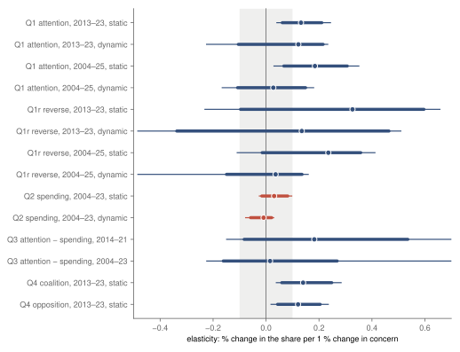
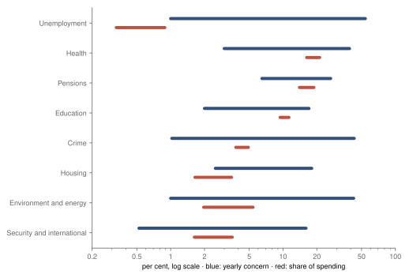
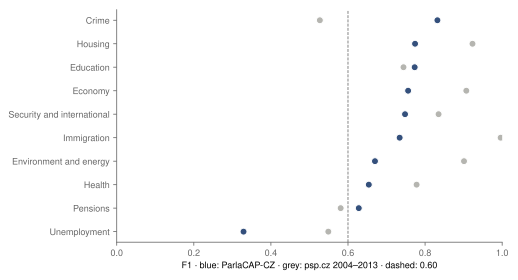

Research · politics · public concern, the Chamber and the budget, 2004–2025
Spending did not move with Czech public concern; the Chamber's speeches moved a little
Registered result: from 2004 to 2023, the share of public spending going to a topic did not move with the share of Czechs naming it among the country's two most important issues. The elasticity is +0.03, with a 90 % interval of −0.02 to +0.08, inside the ±0.10 the study counts as too small to matter. In the Chamber of Deputies, the share of plenary words on a topic moved a little with concern in 2013–2023 in the static model (+0.13), but that estimate depends on the waves of 2020–22: without them it is +0.03 (90 % −0.10 to +0.34) on 11 of 18 waves. The dynamic model was too uncertain to agree, and speeches by governing and opposition MPs moved alike.
- spending and concern
- +0.03 · −0.01 elasticity, static and dynamic model, 2004–2023 · 90 % −0.02 to +0.08 and −0.06 to +0.02 · not supported · registered
- Chamber, 2013–2023
- +0.13 · +0.12 static positive, possibly small, depends on 2020–22; dynamic underpowered · model-dependent · registered
- Chamber, 2004–2025
- +0.18 · +0.03 static and dynamic · both underpowered · registered
- coalition, opposition
- +0.14 · +0.12 2013–2023, static model · both positive, possibly small by the code's rule, no registered label
Overwhelmed? Here's the short version
- Registered result. Over 2004–2023, when more Czechs named a topic such as health, crime or education among the country's two most important issues, the topic's share of general government spending the next year did not move with it. An elasticity of 0.1 would mean that a 10 % rise in concern goes with a 1 % rise in the topic's share of spending. The estimate is +0.03 in the static model and −0.01 in the dynamic one, with a 90 % interval of −0.02 to +0.08, inside the ±0.10 the study counts as too small to matter, which is what the label “not supported” means here; its upper end allows at most a 0.8 % rise in spending share for a 10 % rise in concern. Checks that widen the interval (leaving out 2020–22: +0.07, upper bound +0.17) can no longer exclude 0.10, and none points to an association.
- Registered result. In the Chamber of Deputies, 2013–2023, the share of plenary words on a topic in the half year after a survey moved a little with concern in the static model (+0.13, positive, possibly small). That estimate depends on the waves of 2020–22: without them it is +0.03 (90 % −0.10 to +0.34) on 11 of 18 waves, and on the whole series the same check leaves +0.15 (−0.01 to +0.42), too wide to label. The dynamic model, which also accounts for how much the Chamber talked about the topic before the survey, gave +0.12 with an interval too wide to label, so the registered result is model-dependent. On the whole series 2004–2025 both models are underpowered. Whether attention runs ahead of concern, and whether attention moves with concern more than spending does, could not be told.
- Speeches by governing and opposition MPs moved with concern alike (+0.14 and +0.12), with no difference in point estimates (not tested). The author expected a Chamber that does not follow public concern because it is paralysed by quarrelling. At the registered precision, spending did not move with concern; the Chamber result is mixed; and the two sides of the Chamber show no difference, though quarrelling itself was not measured.
- All of this is association with timing, not a measure of what public concern causes or what the Chamber decides.
Twice a year the Standard Eurobarometer asks about a thousand Czechs to name the two most important issues facing the country1. Studies of the United States, the United Kingdom and the European Council have set such answers against what governments talk about and spend on, and found that attention in speeches moves with public priorities more than laws do, and laws more than budgets5678. No Czech study of this kind was found. This one asks whether, when more Czechs name a topic, the share of plenary words on it in the Chamber of Deputies rises in the following half year, and whether the topic's share of public spending rises the following year. The design, with a rule for reading each result, was registered before any Czech share was read.
The share of general government expenditure going to the eight topics with a budget counterpart did not move with concern over 2004–2023. The elasticity is +0.03 in the static model (90 % interval −0.02 to +0.08) and −0.01 in the dynamic model (−0.06 to +0.02), and both intervals lie inside ±0.10, the registered bound below which an association is too small to matter, so the label is not supported. Checks that widen the interval, such as leaving out 2020–22 (+0.07, upper bound +0.17), can no longer exclude 0.10. An elasticity of 0.1 means that a 10 % rise in concern, say from 20 to 22 % of respondents naming a topic, goes with a 1 % rise in the topic's share, say from 5.0 to 5.05 % of spending or of words.
Attention in the Chamber, measured in 2013–2023 from the ParlaCAP-CZ corpus2, moved a little with concern in the static model: +0.13, with a 95 % interval of +0.04 to +0.24 that lies above zero and whose lower end is below 0.10, which the rule calls positive, possibly small. The estimate depends on the waves of 2020–22: without them it is +0.03 (90 % −0.10 to +0.34) on 11 of 18 waves, so the association rests largely on those waves and cannot be told apart from zero without them. The dynamic model, which adds how much the Chamber talked about the topic before the survey, gives +0.12 with a 90 % interval of −0.10 to +0.22, too wide to label, and since the two models must agree, the registered label is model-dependent. On the whole series 2004–2025 both models are underpowered. Speeches by members of governing and of opposition parties moved with concern alike, with no difference in point estimates (not tested).
How this was done
Concern is the share of Czech respondents naming a topic among the two most important issues facing the country, from the Czech column of Volume A of Standard Eurobarometer 62 to 104, 43 waves from autumn 2004 to 20251. The answer items were grouped into ten topics fixed before the data were read: the economy, unemployment, health, pensions, education, crime, immigration, housing, environment and energy, and security and international affairs. A topic made of several items is the sum of their shares, so it can pass 100 % when respondents name two of its items; the economy reached 117 %. Where the list of items for a topic changed between waves, its series is cut into spells, and each spell is compared only with itself.
Attention is the share of words in the Chamber's plenary speeches that fall on a topic in the 182 days after a survey's fieldwork, cut at the next survey. ParlaCAP-CZ labels each speech of November 2013 to July 2023 with a major topic of the Comparative Agendas Project9, using a published classifier10; of its 196 182 speeches, 64 258 remain after dropping the chair's and those the corpus labels Mix or Other. The extension to 2004–2013 and 2023–2025 runs the same classifier on the stenographic records of psp.cz3, and on the 185 659 speeches matched with ParlaCAP-CZ it gives the same topic for 99.48 %, above the registered 90 %. The Chamber questions are therefore estimated twice, on ParlaCAP-CZ alone (18 waves, EB81 to EB98) and on the whole series (42 waves, EB62 to EB103), each with its own label. Spending is the topic's share of general government total expenditure by function (COFOG) from Eurostat4, for the eight topics with a counterpart: unemployment benefits, health, old-age pensions, education, public order and safety, housing, environmental protection with fuel and energy, and defence. The economy and immigration have none.
Each question is estimated by Poisson pseudo-maximum likelihood11 with the share as the outcome and the log of concern as the regressor, so the coefficient is an elasticity. The models compare each topic with itself over time, after removing what moved all topics in the same wave and each topic's usual spring or autumn level. The static model stops there; the dynamic model adds the topic's share before the survey, with the bias this brings into a short panel removed by a split-panel jackknife12. For spending, the outcome is next year's share, concern is the mean of the year's waves, and the dynamic model adds this year's share. Q1r turns attention and concern around, Q3 subtracts the spending elasticity from an attention elasticity of the same yearly form, and Q4 repeats the static attention model for speeches by governing and opposition MPs and for each government.
With only ten topics, eight for spending, each interval is computed twice: by a wild cluster score bootstrap over topics with Webb weights1314 (9 999 draws), and by a randomisation interval that swaps whole concern series between topics (100 000 orderings, or all of them for eight topics). The label uses the hull of the two, the lower of the two lower bounds and the higher of the two upper bounds, so it needs both methods. The smallest elasticity of interest is 0.10, and each estimate takes the first label that applies: underpowered if its 90 % interval is wider than 0.20, since it could then not lie within ±0.10; not supported if the 90 % interval lies within ±0.10; supported if the 95 % interval lies wholly above 0.10; positive, possibly small if it lies wholly above zero but not above 0.10; inconclusive otherwise. For Q1, Q1r and Q2 the static and dynamic models must agree, or the result is model-dependent. A simulation on made-up series with the study's layout, run before any Czech data were read, (50 simulations per setting, 199 bootstrap draws each) put the median 90 % width at 0.15 to 0.20 for 18 waves and 0.12 for 41 waves at the lower of two noise levels, and at 0.33 to 0.41 for 18 waves at the higher, so an underpowered label was a likely outcome for the Chamber.
Three slips are recorded in the change log. While the Eurobarometer parser was debugged, a diagnostic printed whether each Czech weighted-count cell was at most 1, without values, which showed that terrorism was named by about no one in EB94 and EB96. While the validation code was read, the committed validation file was printed, which holds the validation sample's word shares per topic, not the attention series. And the two coding agents of the validation wrote temporary files to a shared scratch folder, where two reported reading another batch's text before re-extracting their own. None of them printed a Czech series of concern, attention or spending.
The tests
| Question | Static model | Dynamic model | Registered label |
|---|---|---|---|
| Q1 · attention after concern ParlaCAP-CZ, 2013–2023 | +0.13 90 % +0.06 to +0.21 positive, possibly small | +0.12 90 % −0.10 to +0.22 underpowered | model-dependent |
| Q1 · attention after concern whole series, 2004–2025 | +0.18 90 % +0.07 to +0.31 underpowered | +0.03 90 % −0.11 to +0.15 underpowered | underpowered |
| Q1r · concern after attention ParlaCAP-CZ, 2013–2023 | +0.33 90 % −0.10 to +0.60 underpowered | +0.13 90 % −0.34 to +0.46 underpowered | underpowered |
| Q1r · concern after attention whole series, 2004–2025 | +0.24 90 % −0.01 to +0.36 underpowered | +0.04 90 % −0.15 to +0.14 underpowered | underpowered |
| Q2 · spending share after concern 2004–2023 (spending to 2024) | +0.03 90 % −0.02 to +0.08 not supported | −0.01 90 % −0.06 to +0.02 not supported | not supported |
| Q3 · attention minus spending 2014–2021 | – | +0.18 90 % −0.08 to +0.54 underpowered | underpowered |
| Q3 · attention minus spending 2004–2023 | – | +0.02 90 % −0.16 to +0.27 underpowered | underpowered |
| Q4 · coalition MPs ParlaCAP-CZ, 2013–2023 | +0.14 90 % +0.06 to +0.25 positive, possibly small | – | positive, possibly small by the code's rule no registered label |
| Q4 · opposition MPs ParlaCAP-CZ, 2013–2023 | +0.12 90 % +0.04 to +0.20 positive, possibly small | – | positive, possibly small by the code's rule no registered label |
Elasticities with the 90 % interval, the hull of the bootstrap and the randomisation interval, and each model's label by the registered rule. Q1 and Q1r on ParlaCAP-CZ and on the whole series are labelled separately; neither overrides the other.
Spending's elasticity lies within ±0.10 in both registered models; the Chamber's is positive in the static model and too uncertain to label in the dynamic one.

Spending and public concern, 2004–2023
The spending model sets a topic's share of general government expenditure in one year against the mean concern about it in the year before, for eight topics over 2004 to 2023, with spending to 2024. The static elasticity is +0.03 (90 % −0.02 to +0.08, 95 % −0.03 to +0.10) and the dynamic −0.01 (90 % −0.06 to +0.02, 95 % −0.08 to +0.03). Both models agree and both intervals sit inside ±0.10, so the registered label is not supported. By the upper end of the static interval, a topic named by 10 % more Czechs went with at most a 0.8 % larger share of the budget the next year. Leaving out one topic at a time moves the static estimate between +0.02 and +0.05, and leaving out one year between +0.02 and +0.04.
Spending shares moved little over these years, which is part of why the interval is narrow. Each topic's yearly concern ranged by a factor of 4 to 54 between its lowest and highest year, the largest factor coming from a yearly low of 1 % of respondents, and its share of spending by a factor of 1.2 to 2.7 (fig. 2). Much of the budget follows from laws and entitlements, pensions and health care among them. A registered check limited to the five topics a government can shift more freely gives the same label, and so does one with the unemployment rate15 and the old-age dependency ratio16 as controls for unemployment and pension spending. The spending result is therefore about the shares of the budget, which changed slowly over these years; it cannot say whether money within a topic was moved towards what people named.
Described after the results: every topic's yearly concern ranged more widely than any topic's share of spending, by a factor of 4 to 54 against 1.2 to 2.7, the largest from a yearly low of 1 % of respondents.

tools/priorities/describe.py); the table view lists every year. Data: Eurobarometer1, Eurostat4.Attention in the Chamber of Deputies
On ParlaCAP-CZ, 18 waves and ten topics, the static elasticity of attention to concern is +0.13 (90 % +0.06 to +0.21, 95 % +0.04 to +0.24), positive, possibly small, an estimate that depends on the waves of 2020–22 (see Robustness). Leaving out one topic moves it between +0.11 and +0.15 and one wave between +0.11 and +0.15. The dynamic model gives a similar point estimate, +0.12, but its 90 % interval of −0.10 to +0.22 is 0.32 wide, more than the 0.20 the rule allows, so it is underpowered; the bootstrap alone gives −0.02 to +0.21, already 0.24 wide, and the randomisation interval widens the hull further. With the two models disagreeing, the registered label for the Chamber in 2013–2023 is model-dependent.
The whole series, 2004–2025 with 42 waves, gives a static elasticity of +0.18 with a 90 % interval of +0.07 to +0.31 and a 95 % interval of +0.03 to +0.35. Both lie above zero, so on these data a positive association is what the static model shows. The 90 % interval is, however, 0.24 wide, more than 0.20, and the registered rule checks this first, because an interval that wide could not have shown the association to be smaller than 0.10 had it been so; the label is underpowered and stays so. The dynamic model on the whole series gives +0.03 (−0.11 to +0.15), also underpowered, after the jackknife moved it from +0.12.
The reverse direction, whether concern at the next wave moves with attention, is underpowered on both corpora: +0.33 static (−0.10 to +0.60) and +0.13 dynamic on ParlaCAP-CZ, +0.24 (−0.01 to +0.36) and +0.04 on the whole series. So is the difference between attention and spending in one yearly form, +0.18 (−0.08 to +0.54) on ParlaCAP-CZ and +0.02 (−0.16 to +0.27) on the whole series. The study cannot say whether the Chamber's talk runs ahead of public concern or behind it, or whether words move with concern more than money does.
The series behind these models are shown for four topics, chosen after the results by a rule: the four whose list of items never changed and whose concern ranged most widely (fig. 3). Concern about unemployment fell from 54 % of respondents in EB62 to 3 % in EB103, and the share of plenary words on it fell by 36 %, from 5.3 to 3.3 %. Concern about crime fell from 43 to 5 %, a factor of 9, while the share of words on it rose by 84 %, from 10.5 to 19.2 %. Both endpoints are single waves, and the 2004 value rests on the psp.cz records, where the classifier over-counts crime: on the psp.cz validation sample of 2004–2013 its word share is 4.9 points too high and its F1 0.53, from only 4 reference speeches. Concern about immigration peaked at 47 % in EB84, fielded in 2015, and attention to it reached 10.4 % in the half year after EB83. On ParlaCAP-CZ the classifier measures unemployment and pensions worst; on the psp.cz sample, with 4 to 12 reference speeches per topic, crime (0.53) is weaker than pensions (0.58).
Described after the results: as concern about unemployment fell from 54 to 3 % of respondents, its share of plenary words fell by 36 %; as concern about crime fell from 43 to 5 %, its share rose by 84 %, on a topic the classifier over-counts in the early psp.cz records.
![Four panels per Eurobarometer wave, 2004–2025, with concern (share of respondents naming the topic) and attention (share of plenary words in the half year after the wave). Unemployment: concern from 54 % (2004) to 3 % (2025), between 1 and 54 %; attention from 5.3 to 3.3 %, between 0.6 and 17.1 %. Immigration: concern from 3 % (2004) to 11 % (2025), between 2 and 47 %; attention from 2.4 to 5.1 %, between 0.0 and 10.4 %. Crime: concern from 43 % (2004) to 5 % (2025), between 0 and 43 %; attention from 10.5 to 19.2 %, between 1.8 and 19.2 %. Pensions: concern from 8 % (2004) to 17 % (2024), between 5 and 29 %; attention from 4.1 to 3.8 %, between 0.5 and 12.3 %.](../assets/czech-priorities/03-attention.svg)
tools/priorities/describe.py). Data: Eurobarometer1, ParlaCAP-CZ2, psp.cz3.Coalition and opposition
On ParlaCAP-CZ, which records whether a speaker's party was in government, the static attention elasticity is +0.14 for speeches by coalition MPs (90 % +0.06 to +0.25, 95 % +0.04 to +0.28) and +0.12 for opposition MPs (90 % +0.04 to +0.20, 95 % +0.02 to +0.24). The design listed this question as descriptive, without a label; the frozen code applies the same rule, under which both come out positive, possibly small; that is the code's label, not a registered one. Their point estimates differ by only 0.02, so there is no difference in point estimates to speak of (not tested), and their intervals overlap almost entirely. By government, on ParlaCAP-CZ, the estimates are −0.04 for the Sobotka government (7 waves), +0.00 for Babiš (8) and −0.08 for Fiala (3), all underpowered, as are those on the whole series.
The author stated her expectation on 14 October 2026, before any data were read: the Chamber does not follow public concern, “because it is paralysed by the quarrels of the political spectrum”. The data support one part of the wider picture, in that at the registered precision the shares of spending did not move with concern. For the Chamber itself the result is mixed, with a small positive association in one model that depends on the waves of 2020–22, and another model too uncertain to agree. Quarrelling itself was not measured, but if it meant that the governing and opposition sides talk about different things when Czechs worry, their point estimates would be expected to differ, and they barely do.
Robustness
The checks were registered with the design and none relabels a result (design, §6). Each has a point estimate and a wild bootstrap interval only, and with ten topics that bootstrap alone over-rejects: a size simulation before the run found it rejecting 11.5–15.5 % of the time at a nominal 10 %. The labels in the table apply the registered rule to these narrower intervals as a reading aid; levels and change in share are first put on the elasticity scale at the sample means.
For spending, no check gives a positive label, and the check estimates range from −0.03 to +0.07. Checks that widen the interval can no longer exclude 0.10: leaving out 2020–22 gives +0.07 with an upper bound of +0.17, and five of the spending checks are inconclusive.
For the Chamber, the static association depends on the waves of 2020–22. Without them the ParlaCAP-CZ estimate is +0.03 (90 % −0.10 to +0.34) on 11 of 18 waves, and the whole-series estimate +0.15 (−0.01 to +0.42) on 35 of 42, too wide to label, so the association rests largely on those waves and cannot be told apart from zero without them. For the reverse direction and the attention-spending difference almost every check is underpowered; the exceptions lie near zero: reverse, dynamic, 2004–2025, without 2020–2022 (+0.02, inconclusive), reverse, dynamic, 2004–2025, without EB93–96 (+0.01, not supported) and difference, dynamic, 2004–2025, topics with F1 ≥ 0.60 only (+0.00, not supported).
| Check | Chamber 2013–23 static | Chamber 2013–23 dynamic | Chamber 2004–25 static | Spending static | Spending dynamic |
|---|---|---|---|---|---|
| registered hull of both methods | +0.13 +0.06 to +0.21 positive, possibly small | +0.12 −0.10 to +0.22 underpowered | +0.18 +0.07 to +0.31 underpowered | +0.03 −0.02 to +0.08 not supported | −0.01 −0.06 to +0.02 not supported |
| speeches instead of words | +0.12 +0.07 to +0.19 positive, possibly small | +0.09 −0.06 to +0.17 underpowered | +0.15 +0.04 to +0.26 underpowered | – | – |
| chair's speeches kept | +0.14 +0.07 to +0.21 positive, possibly small | +0.13 +0.00 to +0.21 underpowered | +0.19 +0.07 to +0.32 underpowered | – | – |
| “Mix” speeches kept under their top topic | +0.13 +0.07 to +0.20 positive, possibly small | +0.11 −0.03 to +0.20 underpowered | +0.18 +0.06 to +0.30 underpowered | – | – |
| window of one year | +0.12 +0.06 to +0.18 positive, possibly small | +0.18 +0.02 to +0.30 underpowered | +0.16 +0.07 to +0.26 positive, possibly small | – | – |
| without 2020–2022 | +0.03 −0.10 to +0.34 underpowered | −0.03 −0.34 to +0.58 underpowered | +0.15 −0.01 to +0.42 underpowered | +0.07 −0.02 to +0.17 inconclusive | +0.02 +0.00 to +0.04 not supported |
| without EB93–96 (interview mode) | +0.16 −0.03 to +0.45 underpowered | +0.08 −0.22 to +0.49 underpowered | +0.18 +0.01 to +0.38 underpowered | +0.06 −0.02 to +0.14 inconclusive | +0.03 0.00 to +0.07 not supported |
| without waves in which an item list changed | +0.10 +0.02 to +0.18 inconclusive | +0.12 −0.11 to +0.23 underpowered | +0.15 +0.03 to +0.27 underpowered | +0.01 −0.03 to +0.06 not supported | −0.03 −0.08 to +0.00 not supported |
| split-ballot arm B | +0.14 +0.08 to +0.21 positive, possibly small | +0.13 −0.01 to +0.22 underpowered | +0.21 +0.08 to +0.35 underpowered | +0.04 0.00 to +0.09 not supported | 0.00 −0.02 to +0.02 not supported |
| log model by OLS | +0.16 +0.03 to +0.29 underpowered | +0.06 −0.08 to +0.17 underpowered | +0.28 +0.05 to +0.59 underpowered | +0.06 −0.01 to +0.13 inconclusive | +0.04 −0.05 to +0.11 inconclusive |
| levels, as elasticity at the means | +0.21 +0.06 to +0.36 underpowered | +0.14 −0.16 to +0.51 underpowered | +0.30 +0.05 to +0.58 underpowered | +0.02 −0.02 to +0.08 not supported | +0.00 −0.01 to +0.01 not supported |
| weighted by mean concern | +0.15 0.00 to +0.30 underpowered | +0.09 −0.20 to +0.32 underpowered | +0.22 +0.05 to +0.47 underpowered | +0.05 −0.01 to +0.11 inconclusive | −0.01 −0.04 to +0.03 not supported |
| topics with F1 ≥ 0.60 only | +0.14 +0.09 to +0.21 positive, possibly small | +0.15 −0.05 to +0.24 underpowered | +0.26 −0.10 to +0.52 underpowered | – | – |
| attention corrected by the confusion matrix | +0.11 +0.06 to +0.16 positive, possibly small | +0.08 0.00 to +0.15 inconclusive | +0.12 +0.02 to +0.22 inconclusive | – | – |
| discretionary topics only | – | – | – | +0.02 −0.05 to +0.06 not supported | −0.01 −0.05 to +0.01 not supported |
| unemployment and old-age dependency as controls | – | – | – | +0.04 +0.00 to +0.08 not supported | 0.00 −0.05 to +0.05 not supported |
| spending as change in share, per mean share | – | – | – | +0.00 −0.01 to +0.01 not supported | – |
| leave one topic out, range | +0.11 to +0.15 | +0.06 to +0.16 | +0.14 to +0.22 | +0.02 to +0.05 | −0.02 to +0.00 |
| leave one wave (year) out, range | +0.11 to +0.15 | +0.08 to +0.15 | +0.16 to +0.21 | +0.02 to +0.04 | −0.02 to +0.01 |
Elasticity, 90 % interval and the label the registered rule gives it. Registered row: the hull of both methods. Checks: wild cluster bootstrap only. – : the check does not apply to this model.
Validation of the topic classifier
The classifier was checked on 600 speeches, 500 from ParlaCAP-CZ and 100 from the psp.cz records of 2004–2013, drawn so that each topic had about the same number. Two language models from different releases of one family, Claude Sonnet and Claude Opus, coded each speech from the codebook without seeing the classifier's label, and agreed on 544 of them (90.7 %, 86.4 % weighted back to the corpus). The design had the author settle the 56 disagreements; she settled 9 and asked the assistant to decide the other 47 by her rule, with her 9 as examples and without the classifier's label. The assistant is of the same family as both coders, so the reference topic of those 47 speeches is less independent than designed. On the 9 speeches she decided herself, the classifier's label matched hers 3 times.
Weighted back to the corpus, the macro-F1 over the ten topics is 0.69 on ParlaCAP-CZ and 0.77 on psp.cz 2004–2013, above the registered bound of 0.50, a bound set without a calibration of its own, so no result is reported as limited by the classifier. Unemployment is the weakest topic on ParlaCAP-CZ, with an F1 of 0.33 and a recall of 0.24, and pensions are under-counted, with a recall of 0.47 and 0.41 and word shares 3.0 and 3.6 points too low on the two samples (fig. 4). The checks that keep only the topics with an F1 of at least 0.60 and that correct attention by the confusion matrix are in the robustness table.
On ParlaCAP-CZ the classifier reached an F1 of 0.60 or more on 9 of 10 topics; unemployment was the exception, at 0.33.

What this does not show
The study cannot show why concern and attention moved together where they did. An association between them can run through the media, through events that move both at once, or through the Chamber's own debates reaching the public, and the wave effects remove only what moves all topics alike. Nor does it show whether the Chamber acts: words are not laws, and the budget, the nearest measure of action here, is set largely by law and moves slowly. The spending side uses broad COFOG functions: old-age benefits for pensions, public order and safety for crime, defence for security and international affairs, and nothing for the economy or immigration. Within those functions money can move in ways a share does not show.
Concern is measured by two answers from a list, so a topic that ranks third for everyone is invisible, a new item on the list draws mentions from the others, and the fieldwork dates are the survey's, given only by month before EB75, which blurs the windows; EB93 to EB96 may have changed their interview mode. Attention rests on a classifier that is weak on unemployment and under-counts pensions, validated against a reference coded by two language models of one family, with 47 of the 56 disagreements decided by the assistant, also of that family, and the classifier matching the author's own decisions on 3 of 9. The Chamber series have 18 waves on ParlaCAP-CZ and 42 on the whole series, and each government only a few, 3 for the Fiala government on ParlaCAP-CZ. The four topics in fig. 3 and the ranges in fig. 2 were chosen and drawn after the results; they are reading aids, not tests.
Reproduction
Every number on this page is filled in by a script from results.json, validation.json, describe.json and the data, overlap and power files in docs/research/. From the repository root, with the raw files in tools/data/priorities/:
tools/priorities/fetch.pyandprepare.py: the raw files with hashes, and counts only.psp.py,classify.pyandoverlap.py: the psp.cz speeches, the classifier run and the registered agreement with ParlaCAP-CZ.validation_sample.py,adjudicate.pyandvalidation.py: the validation sample, its adjudication and the classifier's scores;power.py: the simulation on made-up series.estimate.py: the registered estimates and checks, frozen under the tagpriorities-code, with tests intest_estimate.py.describe.py: the series drawn after the results;article.py: the figures, the labels of the converted checks and this page.
The design is docs/research/priorities-design.md.
References
- European Commission (2004–2025) Standard Eurobarometer 62 to 104, Volume A tables, “What do you think are the two most important issues facing (OUR COUNTRY) at the moment?”, Czech column. Brussels: European Commission. Datasets on data.europa.eu: EB62, EB63, EB64, EB65, EB66, EB67, EB68, EB69, EB70, EB71, EB72, EB73, EB74, EB75, EB76, EB77, EB78, EB79, EB80, EB81, EB82, EB83, EB84, EB85, EB86, EB87, EB88, EB89, EB90, EB91, EB92, EB93, EB94, EB95, EB96, EB97, EB98, EB99, EB100, EB101, EB102, EB103, EB104 (Accessed: 14 October 2026); download links and hashes in
docs/research/priorities-manifest.json. - Ljubešić, N., Rupnik, P., Kuzman Pungeršek, T., Porupski, I., Mochtak, M., Dinić, V., Širinić, D., Kopp, M. and Erjavec, T. (2025) ParlaCAP: Dataset for tracking political agenda-setting across European parliaments. Zagreb: CROSSDA. Licence CC BY 4.0. doi: 10.23669/1ZTELP.
- Poslanecká sněmovna Parlamentu České republiky (n.d.) Digitální repozitář: stenoprotokoly. Available at: https://www.psp.cz/eknih/ (Accessed: 14 October 2026); files and hashes in
docs/research/priorities-psp-manifest.json. - Eurostat (2026a) General government expenditure by function (COFOG) [gov_10a_exp], updated 16 September 2026. Luxembourg: Eurostat. doi: 10.2908/GOV_10A_EXP.
- Jones, B.D. and Baumgartner, F.R. (2004) ‘Representation and agenda setting’, Policy Studies Journal, 32(1), pp. 1–24. doi: 10.1111/j.0190-292X.2004.00050.x.
- Jennings, W. and John, P. (2009) ‘The dynamics of political attention: public opinion and the Queen’s Speech in the United Kingdom’, American Journal of Political Science, 53(4), pp. 838–854. doi: 10.1111/j.1540-5907.2009.00404.x.
- Bevan, S. and Jennings, W. (2014) ‘Representation, agendas and institutions’, European Journal of Political Research, 53(1), pp. 37–56. doi: 10.1111/1475-6765.12023.
- Alexandrova, P., Rasmussen, A. and Toshkov, D. (2016) ‘Agenda responsiveness in the European Council: public priorities, policy problems and political attention’, West European Politics, 39(4), pp. 605–627. doi: 10.1080/01402382.2015.1104995.
- Bevan, S. (2019) ‘Gone fishing: the creation of the Comparative Agendas Project master codebook’, in Baumgartner, F.R., Breunig, C. and Grossman, E. (eds) Comparative Policy Agendas: Theory, Tools, Data. Oxford: Oxford University Press, pp. 17–34. doi: 10.1093/oso/9780198835332.003.0002. Codebook at https://www.comparativeagendas.net/pages/master-codebook.
- CLASSLA (n.d.) classla/ParlaCAP-Topic-Classifier. Hugging Face. Available at: https://huggingface.co/classla/ParlaCAP-Topic-Classifier (Accessed: 14 October 2026).
- Santos Silva, J.M.C. and Tenreyro, S. (2006) ‘The log of gravity’, The Review of Economics and Statistics, 88(4), pp. 641–658. doi: 10.1162/rest.88.4.641.
- Dhaene, G. and Jochmans, K. (2015) ‘Split-panel jackknife estimation of fixed-effect models’, The Review of Economic Studies, 82(3), pp. 991–1030. doi: 10.1093/restud/rdv007.
- Kline, P. and Santos, A. (2012) ‘A score based approach to wild bootstrap inference’, Journal of Econometric Methods, 1(1), pp. 23–41. doi: 10.1515/2156-6674.1006.
- Webb, M. (2023) ‘Reworking wild bootstrap-based inference for clustered errors’, Canadian Journal of Economics, 56(3), pp. 839–858. doi: 10.1111/caje.12661.
- Eurostat (2026b) Unemployment by sex and age – annual data [une_rt_a]. Luxembourg: Eurostat. doi: 10.2908/UNE_RT_A.
- Eurostat (2026c) Population structure indicators at national level [demo_pjanind]. Luxembourg: Eurostat. doi: 10.2908/DEMO_PJANIND.